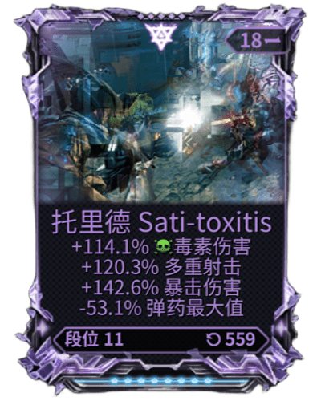
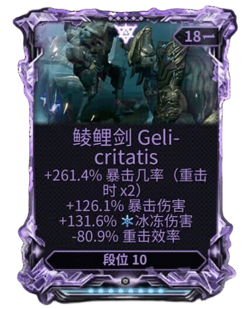

告别繁琐的手动录入。Riven OCR Assistant 采用图像识别技术，一键识别紫卡属性并自动填表，助您在 warframe.market 极速上架。


不仅仅是识别，更是完整的自动化体验
快速解析武器名、词条数值、段位及极性。自研深度学习模型，针对 Warframe 字体深度优化。
深度集成 market 页面。点击识别结果，瞬间模拟人工操作完成所有表单项填写，杜绝输入错误。
内置 Riven Tracker 接口。识别即显示昨日底价与均价，助您在变幻莫测的市场中精准定价。
简单、直观、高效
在游戏中或通过外部工具截取紫卡属性界面。你可以通过快捷键直接粘贴到插件中。
插件将图像发送至高可用 OCR 后端，瞬间提取所有关键属性，并在面板中清晰展示供确认。
点击“写入页面”，插件会自动在 warframe.market 呼出拍卖窗口并填入所有数据。只需点击发布！